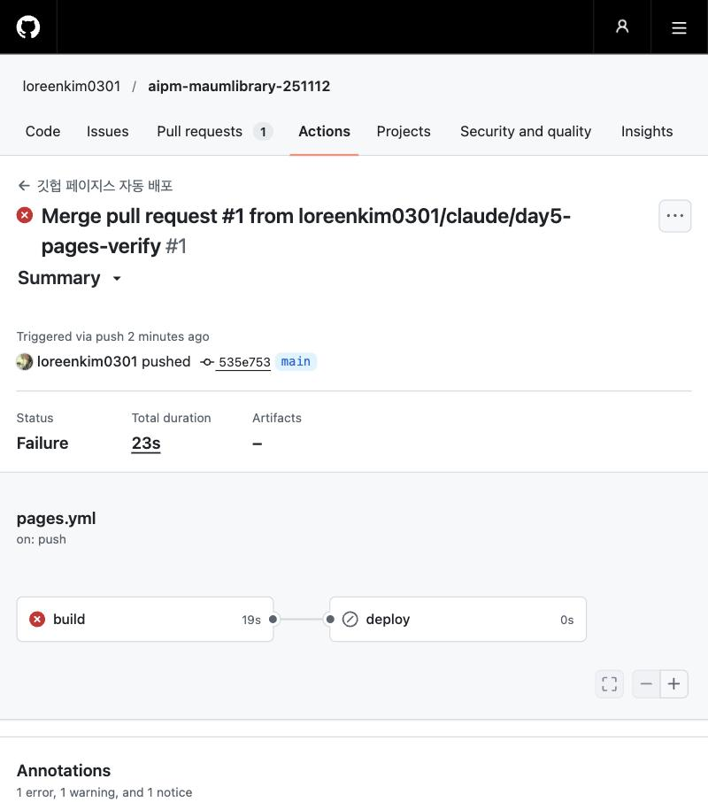
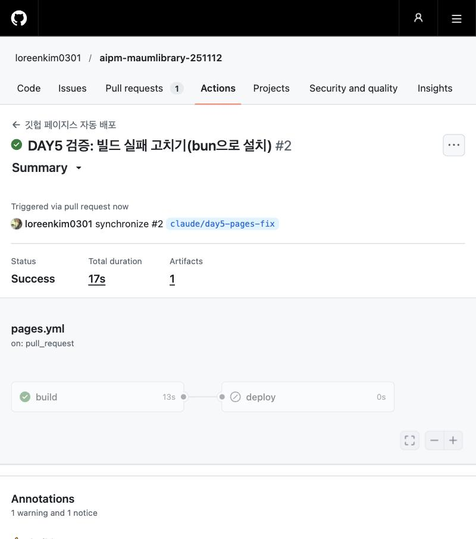

마음책방을 깃헙에 올리면 저절로 배포돼요
어제 내 컴퓨터에서 연 마음책방을 오늘은 세상에 내보내요. 먼저 클로드 코드가 일반 채팅과 무엇이 다른지 잡아요. 그다음 클로드 코드로 마음책방을 깃헙에 올리고, 깃헙 페이지스로 자동 배포해요. 올리기만 하면 저절로 배포되는 흐름에 CI/CD라는 이름을 붙이고, 마지막에는 저장소를 비공개로 바꿔 파이어베이스로 자동 배포해요. 3주차를 돌아보며 마쳐요.
교육 개요
| 시간 | 09:00–18:00 (점심 12:00–13:00, 수업 8시간) |
|---|---|
| 교과 | [기본] AI 서비스 개발 · 11일차 (총 18일) |
| 교육 목표 | 클로드 코드로 마음책방을 깃헙에 올리고, 깃헙 페이지스와 파이어베이스로 자동 배포하며 CI/CD가 왜 필요한지 설명한다. |
| 수업이 끝나면 | ① 채팅으로도 되는데 왜 클로드 코드로 가는지 말하기 ② 클로드 코드로 비밀 값을 빼고 깃헙에 올리기 ③ 깃헙 페이지스로 자동 배포하고, 공개 저장소 조건 말하기 ④ CI/CD와 깃헙 액션이 무엇이고, 없으면 무엇이 불편한지 말하기 ⑤ 비공개 저장소 + 파이어베이스 + 깃헙 액션으로 자동 배포하기 |
수업 전 준비
- 마음책방 폴더: 어제 4-10에서 내려받아 로컬에서 연 마음책방 폴더가 있는지 봐요.
- 클로드 데스크톱 앱: 어제 설치한 앱이 열리고 Code 탭이 보이는지 봐요.
- 깃헙 계정: 1주차부터 쓴 깃헙 계정으로 로그인해 둬요.
- 깃·노드제이에스: 어제 4-9에서 확인한 결과를 열어 둬요. 깃은 2세션, 노드제이에스는 5세션에서 필요해요.
- 파이어베이스(강사): 강사가 만든 파이어베이스 프로젝트에 수강생 구글 계정을 미리 추가해요.
타임테이블
| 시간 | 구분 | 내용 |
|---|---|---|
| 09:00–09:20 | 오늘의 단어 | 오늘의 단어 |
| 강사 조정 | SESSION 1 | 채팅으로도 되는데, 왜 클로드 코드로 가나 |
| 강사 조정 | SESSION 2 | 클로드 코드로 마음책방을 깃헙에 올리기 |
| 강사 조정 | SESSION 3 | 깃헙 페이지스로 자동 배포하기 |
| 강사 조정 | SESSION 4 | CI/CD 맛보기: 개발 과정을 자동으로 |
| 강사 조정 | SESSION 5 | 비공개 저장소 + 파이어베이스로 자동 배포하기 |
| 강사 조정 | SESSION 6 | 3주차 회고와 다음 주 예고 |
| 17:30–18:00 | 정리 | 오늘 정리와 과제 |
오늘의 단어
오늘 처음 나오는 말을 먼저 짧게 짚고 시작해요. 수업 중에 다시 나오면 이 표로 돌아와요.
| 단어 | 뜻 |
|---|---|
| 깃 · 깃헙 | 깃은 내 컴퓨터에서 코드의 변경 기록을 남기는 프로그램, 깃헙은 그 기록을 올려 두는 웹사이트예요. |
| 커밋 · 푸시 | 커밋은 변경을 기록으로 남기기, 푸시는 그 기록을 깃헙에 올리기예요. |
| 퍼블릭 · 프라이빗 | 저장소를 누구나 볼 수 있게(공개) 둘지, 허락한 사람만 보게(비공개) 둘지예요. |
| .gitignore | 깃헙에 올리지 않을 파일 목록. 키가 든 파일을 여기에 적어 빼요. |
| 깃헙 페이지스 | 저장소의 파일을 그대로 웹사이트로 보여 주는 깃헙의 무료 기능 |
| CI/CD | 코드를 올리면 자동으로 검사(CI)하고 배포(CD)하는 흐름 |
| 깃헙 액션 | 깃헙에서 CI/CD 같은 자동 과정을 실행해 주는 기능. 기록은 Actions 탭에 남아요. |
| 파이어베이스 호스팅 | 구글 파이어베이스의 웹사이트 배포 기능. 비공개 저장소에서도 깃헙 액션으로 자동 배포할 수 있어요. |
채팅으로도 되는데, 왜 클로드 코드로 가나
어제 데스크톱 앱의 채팅에 파일 시스템을 연결해서 폴더를 만들고 헬로 페이지도 만들었어요. 같은 데스크톱 앱 안에 Code 탭(클로드 코드)도 있어요. 채팅으로도 내 컴퓨터의 파일을 다룰 수 있는데, 왜 챗봇은 클로드 코드로 만들까요?
개념1-1. 어제 채팅에서 막혔던 곳 다시 보기
어제 채팅(파일 시스템 연결)으로 여러 일을 시켜 봤던 것 기억하시나요? 되는 일과 막히는 일이 나뉘었어요.
| 시킨 일 | 채팅(파일 시스템) | 막힌 이유 |
|---|---|---|
| 새 폴더·파일 만들기, 파일 읽기 | 됐어요 | |
| 이름 바꾸기, 옮기기, 지우기 | 안 된 경우가 있었어요 | 클로드가 "지금 연결로는 새 파일을 만드는 것만 되고, 이미 있는 파일이나 폴더의 이름을 바꾸거나 지울 수는 없어요"라고 답했어요. 명령을 실행하는 도구가 없었어요. |
| 만든 폴더 열기 | 안 된 경우가 있었어요 | 화면을 직접 다루는 컴퓨터 사용 기능이 필요한데, 회사·기관 계정(Team·Enterprise)은 켤 수 없었어요. |
| 헬로 페이지 서버 켜기 | 클로드가 한 줄을 알려 주고, 내가 터미널을 열어 붙여 넣었어요 | 채팅은 터미널 명령을 직접 실행하지 못해요. |
출처: 2026-11-12 수업 화면 기준 · Claude 도움말 Computer use(Team·Enterprise 미제공) (2026-11-12 확인)
개념1-2. 클로드 코드가 다른 점
채팅의 파일 시스템은 파일을 읽고 쓰는 손만 빌려준 거예요. 클로드 코드는 그 손에 더해 터미널까지 맡긴 거예요. 터미널로는 이름 바꾸기·옮기기·지우기, 서버 켜기, 프로그램 설치, 실행해 보고 오류 확인하기를 다 할 수 있어요.
| 구분 | 채팅 + 파일 시스템 | 클로드 코드(Code 탭) |
|---|---|---|
| 일하는 단위 | 대화 한 번에 파일 몇 개 | 폴더 하나를 프로젝트로 열고, 안의 파일 전체를 읽고 일해요 |
| 터미널 명령 | 못 해요. 붙여 넣을 줄을 알려 줘요 | 직접 실행해요(실행 전에 물어봐요) |
| 파일 바꾸기 | 파일을 새로 쓰거나 덮어써요 | 바뀐 줄만 diff로 보여 주고, 내가 승인하면 반영해요 |
| 일하는 방식 | 한 번 묻고 한 번 답해요 | 읽기 → 고치기 → 실행해 보기 → 오류 보고 다시 고치기를 이어서 해요 |
| 내가 조절하는 것 | 허락할 폴더 | 열 폴더와 권한 모드(오늘은 [Manual]: 고치거나 실행하기 전에 매번 물어봐요) |
어제 마지막 실습에서 클로드 코드는 마음책방의 README를 스스로 읽고, 실행 명령을 직접 실행하기 전에 승인을 물었어요. 채팅에서 한 줄을 받아 내가 붙여 넣던 것과 비교해 봐요.
출처: Claude Code 공식 문서 Get started with the desktop app(Code 탭, 폴더 열기, 권한 모드, diff) (2026.11.08 확인) · 수업 장면: 2026-11-12 수업 기준
정리1-3. 그래서 챗봇은 왜 클로드 코드로 만드나
오늘은 마음책방 폴더를 깃 저장소로 만들고, 깃헙에 올리고, 자동 배포까지 연결해요. 이 일은 대부분 터미널 명령(git, firebase)으로 해요. 그래서 폴더 전체를 보고, 명령을 직접 실행하고, 실행 전에 승인을 묻는 클로드 코드가 맞아요. 다음 주 월요일 챗봇 만들기도 클로드 코드로 해요.
| 이럴 때 | 쓰는 곳 |
|---|---|
| 아이디어를 묻고, 글을 다듬고, 개념을 배울 때. 파일 한두 개를 만들어 둘 때 | 채팅(필요하면 파일 시스템 연결) |
| 파일 여러 개로 된 앱을 만들고 고칠 때, 명령을 실행해 결과를 확인해야 할 때 | 클로드 코드 |
확인할 점
- 채팅의 파일 시스템으로 안 됐던 일을 하나 말할 수 있다
- 클로드 코드가 파일을 고치거나 명령을 실행하기 전에 무엇을 보여 주는지 말할 수 있다
데스크톱 앱 설치와 권한 모드를 다시 보려면 DAY 4의 2-2를 열어요.
클로드 코드로 마음책방을 깃헙에 올리기
어제 내 컴퓨터에서 연 마음책방 폴더를 클로드 코드로 열고, 내 깃헙 저장소에 올려요. 명령은 클로드 코드가 실행하고, 나는 무엇을 올릴지 정하고 승인해요.
기획자2-1. 올릴 것과 올리지 않을 것 정하기
오늘 만드는 저장소는 퍼블릭(공개)이에요. 3세션의 깃헙 페이지스를 무료 계정으로 쓰려면 저장소가 공개여야 하거든요. 공개 저장소는 누구나 코드를 전부 볼 수 있어요. 그래서 올리기 전에 빼야 할 것을 먼저 정해요.
| 구분 | 예 | 올리나요? |
|---|---|---|
| 화면과 기능 코드 | index.html, 그림, 글꼴 설정 | 올려요 |
| 비밀 값 | API 키, 토큰, .env 파일 | 절대 안 올려요 |
| 내 컴퓨터에서만 쓰는 것 | 설치된 부품 폴더(node_modules), 서버 켜는 임시 파일 | 안 올려요 |
마음책방은 AI 키가 없으면 샘플 방식으로 돌아가요(어제 4-10). 공개 주소에서도 키를 코드에 넣지 않아요. 진짜 AI 추천을 붙이는 방법은 다음 주에 배워요.
출처: GitHub Docs What is GitHub Pages?("GitHub Pages is available in public repositories with GitHub Free and GitHub Free for organizations") (2026-11-12 확인)
개발자·구현2-2. 클로드 코드로 저장소 만들고 올리기
STEP 1. 마음책방 폴더를 클로드 코드로 열기
데스크톱 앱 Code 탭에서 어제 4-10에서 내려받은 마음책방 폴더를 열어요. 권한 모드는 [Manual]로 둬요.
STEP 2. 올릴 준비 시키기
요청: 이 폴더를 깃헙에 공개 저장소로 올릴 준비를 해 줘. 내용: 먼저 API 키·토큰·.env처럼 비밀 값이 코드에 들어 있는지 찾아서 알려 줘. 비밀 값과 node_modules는 .gitignore로 빼 줘. 그다음 깃 저장소를 만들고 첫 커밋을 해 줘. 커밋 메시지는 '마음책방 첫 업로드'로 해 줘. 형식: ① 찾은 비밀 값 목록(없으면 '없음') ② .gitignore에 넣은 것 ③ 실행할 명령 목록을 한 줄씩.
클로드 코드가 명령을 실행하기 전에 물어봐요. ①에 비밀 값이 있으면 승인하지 말고 "그 값을 코드에서 빼 줘"라고 먼저 보내요.
STEP 3. 깃헙에 새 저장소를 만들고 올리기
요청: 방금 커밋한 코드를 내 깃헙에 새 공개 저장소로 올려 줘. 내용: 저장소 이름은 maum-books-[내 영문 이름]으로 해 줘. 깃헙 로그인이 필요하면 토큰을 대화창에 붙여 넣으라고 하지 말고, 내가 직접 로그인하는 방법을 알려 줘. 형식: ① 내가 해야 할 일 ② 올라간 저장소 주소를 한 줄씩.
막히면
| 이렇게 보이면 | 이렇게 해요 |
|---|---|
| git을 찾을 수 없다고 나와요 | 깃이 설치되지 않았어요. 어제 4-9 STEP 2에서 확인했던 것 기억하시나요? 클로드 코드에게 "내 컴퓨터에 깃을 설치하는 방법을 알려 줘"라고 묻고, 설치는 강사와 함께 해요. |
| 브라우저가 열리며 깃헙 로그인을 하래요 | 내 깃헙 계정으로 로그인하고 허용해요. 끝나면 클로드 코드로 돌아와요. |
| 사용자 이름과 비밀번호를 물어요 | 비밀번호 자리에는 깃헙 비밀번호가 아니라 토큰을 넣어요. 1세션 1-11에서 만든 토큰을 기억하시나요? 토큰은 대화창이 아니라 이 입력 칸에만 넣어요. |
확인할 점
- 깃헙에서 새 저장소가 Public으로 보이고, 마음책방 파일이 올라가 있다
- 저장소 파일 목록에 .env나 키가 든 파일이 없다
결과2-3. 결과
이렇게 보이면 성공저장소 첫 화면에 마음책방 파일과 '마음책방 첫 업로드' 커밋이 보이고, 비밀 값 파일은 없다
깃헙 페이지스로 자동 배포하기
깃헙 페이지스를 켜고, 코드를 고쳐 올리면 공개 주소가 저절로 바뀌는 것을 확인해요.
개념3-1. 깃헙 페이지스와 '공개 저장소' 조건
1주차 금요일에 소개 페이지를 깃헙 페이지스로 배포했던 것 기억하시나요? 깃헙 페이지스는 저장소의 파일을 그대로 웹사이트로 보여 주는 무료 기능이에요.
| 확인할 것 | 내용 |
|---|---|
| 무료 계정에서 쓰는 조건 | 저장소가 공개(Public)여야 해요. 비공개(Private) 저장소에서 쓰려면 유료 요금제(Pro, Team 등)가 필요해요. |
| 공개라는 뜻 | 사이트 주소를 아는 사람뿐 아니라, 저장소의 코드 전체를 누구나 볼 수 있어요. 키나 개인정보를 넣으면 그대로 드러나요. |
| 배포 방식 | 깃헙 페이지스는 늘 깃헙 액션(Actions)이라는 자동 실행으로 배포돼요. 4세션에서 이 기록을 직접 봐요. |
출처: GitHub Docs What is GitHub Pages?(공개·비공개 조건) · Configuring a publishing source("Your GitHub Pages site will always be deployed with a GitHub Actions workflow run.") (2026-11-12 확인)
실습3-2. 깃헙 페이지스 켜기
깃헙에서 2세션에 만든 저장소를 열고 [Settings]를 눌러요.
왼쪽 메뉴에서 [Pages]를 눌러요.
Build and deployment의 Source에서 [Deploy from a branch]를 골라요.
Branch를 [main], 폴더를 [/(root)]로 고르고 [Save]를 눌러요.
1~2분 뒤 새로고침하면 위쪽에 'Your site is live at …' 주소가 나와요. 눌러서 열어요.
막히면
| 이렇게 보이면 | 이렇게 해요 |
|---|---|
| 주소는 열리는데 빈 화면이에요 | 깃헙 페이지스에 올리려면 한 번 더 맞춰야 하는 앱일 수 있어요. 아래 참고 상자를 보고, 클로드 코드에게 "이 앱을 깃헙 페이지스에서 열리게 맞춰 줘"라고 물어요. |
| 404 화면이 나와요 | 저장소 맨 위에 index.html이 있는지 봐요. 다른 폴더 안에 있으면 클로드 코드에게 위치를 맞춰 달라고 해요. |
출처: GitHub Docs Configuring a publishing source(Settings > Pages > Deploy from a branch > Save) (2026-11-12 확인)
AI 스튜디오에서 만든 앱은 원래 구글 클라우드에 올리도록 만들어져 있어요. 깃헙 페이지스는 그 기본 배포처가 아니에요. 그래서 깃헙 페이지스에 올리려면 맞추는 작업이 필요해요. 강사가 직접 해 본 결과예요.
| 해 본 것 | 뜻 |
|---|---|
| AI 스튜디오가 만든 코드 그대로 | 화면과 서버가 같이 있는 앱이에요. 서버와 키가 함께 돌아가는 구글 클라우드가 기본 배포처예요. |
| 깃헙 페이지스에 처음 올렸더니 빨간 X | 기본 배포처가 아닌 곳에 올려서, 맞추는 작업이 필요했어요. |
| 오류 기록을 클로드에게 보여 주고 고쳐서 다시 올렸더니 초록 체크 | 오류가 나도 기록을 보여 주면 AI가 고칠 수 있어요. |
| 공개 주소에서 화면은 열려요 | 깃헙 페이지스는 화면만 올려 주는 곳이에요. 서버가 하던 일(AI 추천, 관리자 저장)은 여기서 동작하지 않아요. |


정리하면, AI 스튜디오의 기본 배포처는 바꿀 수 있어요. 다만 바꾸면 맞추는 작업이 생기고, 기본 배포처에서 되던 기능이 안 될 수 있어요. 그래서 기획자는 "어디에 올릴지"를 먼저 정해요.
출처: 강사 시연 저장소 aipm-maumlibrary-251112 Actions(첫 배포 실패 → 고친 뒤 성공) · 같은 저장소의 .env.example(AI 스튜디오가 실행할 때 키를 넣어 줌, 주소는 Cloud Run 서비스) (2026-11-12 확인)
실습3-3. 고쳐서 올리면 저절로 바뀌는지 보기
요청: 마음책방 첫 화면 제목 아래에 '깃헙 페이지스 자동 배포 테스트'라는 작은 글자를 한 줄 넣고, 커밋해서 깃헙에 올려 줘. 내용: 다른 곳은 바꾸지 마. 커밋 메시지는 '자동 배포 테스트 문구 추가'로 해 줘. 형식: 바뀐 줄(diff)을 먼저 보여 주고, 내가 승인하면 커밋하고 올려 줘.
diff를 보고 승인해요.
1~2분 뒤 깃헙 페이지스 주소를 새로고침해요. 아무것도 따로 누르지 않았는데 새 문구가 보이면 성공이에요.
개념3-4. 자동이 안 되면 무엇이 나쁠까
방금은 올리기만 했는데 사이트가 바뀌었어요. 이게 자동이 아니라면 어떻게 될까요?
| 자동이 아니면 | 생기는 일 |
|---|---|
| 매번 손으로 올려야 해요 | 고칠 때마다 파일을 골라 서버에 올리는 일을 반복해요. 하루에 열 번 고치면 열 번 해요. |
| 깜빡하면 코드와 화면이 달라요 | 저장소에는 고친 코드가 있는데 사이트는 옛날 그대로예요. 기획자는 "고쳤다는데 왜 그대로지?" 하고 헷갈려요. |
| 파일 하나를 빠뜨려요 | 여러 파일 중 하나만 안 올리면 화면이 깨져요. |
| 누가 언제 무엇을 배포했는지 몰라요 | 문제가 생겨도 어느 변경 때문인지 찾기 어려워요. |
결과3-5. 결과
이렇게 보이면 성공공개 주소에서 마음책방이 열리고, 코드를 고쳐 올리면 따로 누르지 않아도 1~2분 뒤 화면이 바뀐다
CI/CD 맛보기: 개발 과정을 자동으로
방금 겪은 '올리면 저절로 배포'에 이름을 붙여요. 개념과 기록 보기까지만 하고, 직접 만드는 것은 선택이에요.
개념4-1. CI/CD란?
빵집에 비유해 볼게요. 반죽(코드)을 넣으면 컨베이어가 알아서 굽고(빌드), 탄 빵은 골라내고(검사), 통과한 빵만 진열대에 올려요(배포). 사람은 반죽만 잘 만들면 돼요.
| 말 | 뜻 | 빵집에서는 |
|---|---|---|
| CI (지속적 통합) | 코드를 올릴 때마다 자동으로 합치고 검사해요. | 반죽이 들어오면 바로 굽고 탄 빵을 골라내요 |
| CD (지속적 배포) | 검사를 통과하면 자동으로 사이트에 내보내요. | 통과한 빵을 바로 진열대에 올려요 |
| 깃헙 액션(Actions) | 깃헙에서 이 자동 과정을 실행해 주는 기능이에요. | 컨베이어 벨트 |
3세션의 깃헙 페이지스는 CD예요. 올리면 깃헙 액션이 저절로 배포했어요.
실습4-2. 깃헙 액션에서 배포 기록 보기
저장소 위쪽의 [Actions] 탭을 눌러요.
목록에 배포 기록이 줄마다 보여요. 맨 위 줄이 3-3에서 올린 '자동 배포 테스트 문구 추가' 커밋인지 봐요.
줄 앞의 표시를 봐요. 초록 체크는 성공, 빨간 X는 실패예요. 줄을 누르면 걸린 시간과 단계가 보여요.
| 기록에서 알 수 있는 것 | 내 결과 |
|---|---|
| 어떤 커밋이 배포되었나 | |
| 성공했나(초록 체크 / 빨간 X) | |
| 몇 초 걸렸나 |
개념4-3. CI/CD가 없으면 무엇이 불편한가
| CI/CD가 없으면 | CI/CD가 있으면 |
|---|---|
| 사람이 배포 순서를 기억해서 손으로 해요. 바쁘면 빠뜨려요. | 올리기만 하면 같은 순서로 자동 실행돼요. |
| 실수(깨진 코드, 키가 든 파일)가 그대로 사이트에 나가요. | 검사에서 걸리면 배포가 멈추고 빨간 X로 알려 줘요. |
| "지금 사이트에 나간 게 어느 버전이지?"를 아무도 몰라요. | Actions 기록에 커밋·시간·결과가 남아요. |
| 여러 명이 각자 올리면 서로 덮어써요. | 모두 같은 저장소와 같은 자동 과정을 거쳐요. |
기획자에게는 "고친 내용이 언제 사용자에게 보이나"를 예측할 수 있다는 게 가장 큰 차이예요.
선택4-4. 검사(CI) 하나 붙여 보기
원하는 사람만 해요. 올릴 때마다 코드에 키처럼 보이는 글자가 들어 있는지 검사하게 해 봐요.
요청: 깃헙에 올릴 때마다 코드 안에 API 키처럼 보이는 글자가 있는지 검사하는 깃헙 액션을 만들어 줘. 내용: 키처럼 보이는 글자가 있으면 빨간 X로 실패하게 해 줘. 나는 개발을 모르는 기획자야. 형식: ① 만들 파일 이름과 하는 일을 세 줄 이내로 ② diff를 보여 주고 승인받은 뒤 커밋해서 올려 줘.
올린 뒤 [Actions] 탭에 검사 기록이 하나 더 생기는지 봐요.
결과4-5. 결과
이렇게 보이면 성공Actions 탭에서 내 커밋의 배포 기록을 찾아 성공 여부와 걸린 시간을 말할 수 있다
비공개 저장소 + 파이어베이스로 자동 배포하기
깃헙 페이지스를 내리고, 저장소를 비공개로 바꿔요. 그다음 강사가 만들어 둔 파이어베이스에 연결해서, 코드를 올리면 깃헙 액션이 파이어베이스로 자동 배포하게 해요.
개념5-1. 깃헙 페이지스와 파이어베이스 호스팅 비교
| 구분 | 깃헙 페이지스(3세션) | 파이어베이스 호스팅(지금) |
|---|---|---|
| 무료로 쓸 때 저장소 | 공개여야 해요 | 공개·비공개 모두 돼요 |
| 자동 배포 | 켜기만 하면 저절로 | 깃헙 액션을 한 번 연결해야 해요 |
| 함께 쓸 수 있는 것 | 화면 파일만 | 로그인, 데이터베이스 등 파이어베이스 기능 |
| 주소 | …github.io/저장소 | …web.app |
출처: Firebase Docs Deploy to live & preview channels via GitHub pull requests(public or private 저장소, 2026-11-10 갱신, 2026-11-12 확인)
실습5-2. 깃헙 페이지스 내리고 저장소를 비공개로 바꾸기
STEP 1. 깃헙 페이지스 내리기
저장소 [Settings] > [Pages]로 가요.
'Your site is live at …' 옆의 메뉴를 눌러 [Unpublish site]를 골라요.
잠시 뒤 깃헙 페이지스 주소를 새로고침해 404가 뜨는지 봐요.
STEP 2. 저장소를 비공개로 바꾸기
[Settings] > [General] 맨 아래 Danger Zone에서 [Change visibility]를 눌러요.
[Make private]를 고르고, 안내에 따라 저장소 이름을 입력해 확인해요.
저장소 이름 옆 표시가 Private로 바뀌었는지 봐요.
출처: GitHub Docs Unpublishing a GitHub Pages site (2026-11-12 확인)
기획자5-3. 연결하기 전에 정할 것
| 정할 것 | 내 값 |
|---|---|
| 파이어베이스 프로젝트 ID (강사가 알려 줘요) | |
| 내 사이트 이름 (예: maum-books-영문이름) | |
| 사이트에 내보낼 폴더 (index.html이 있는 곳, 빌드하는 앱이면 빌드 결과 폴더) | |
| 언제 자동 배포할지 (main에 올라가면 바로 실제 주소에 반영) | main에 올라가면 |
파이어베이스는 미리보기 주소도 만들 수 있어요. 미리보기에서도 실제 파이어베이스 자원(데이터 등)을 그대로 쓴다는 점을 기억해요.
개발자·구현5-4. 클로드 코드로 파이어베이스와 깃헙 액션 연결하기
이 단계는 파이어베이스 명령 도구가 필요해요. 어제 4-9 STEP 2에서 노드제이에스(node)를 확인했던 것 기억하시나요? 노드제이에스가 있어야 해요.
요청: 이 저장소를 파이어베이스 호스팅에 연결하고, main에 올리면 깃헙 액션이 자동으로 배포하게 해 줘. 내용: 파이어베이스 프로젝트 ID는 [5-3 값], 사이트 이름은 [5-3 값], 내보낼 폴더는 [5-3 값]이야. 공식 방법(firebase init hosting:github)을 써 줘. 로그인이 필요하면 내가 브라우저에서 직접 하게 안내해 주고, 키나 토큰을 대화창에 붙여 넣으라고 하지 마. 형식: ① 내가 직접 해야 할 일 ② 만들어지는 파일 이름과 하는 일 ③ 끝나고 확인할 주소를 한 줄씩.
브라우저가 열리면, 강사가 파이어베이스 프로젝트에 추가해 준 구글 계정으로 로그인하고 허용해요.
클로드 코드가 명령마다 승인을 물으면 무엇을 하는지 읽고 승인해요.
끝나면 저장소에 .github/workflows 폴더와 파이어베이스 설정 파일이 생겨요. 깃헙 저장소 [Settings] > [Secrets and variables] > [Actions]에 파이어베이스용 비밀 값이 하나 생겼는지 봐요. 값은 보이지 않는 게 정상이에요.
① 파이어베이스 프로젝트에 '배포만 할 수 있는 계정(서비스 계정)'을 만들어요. ② 그 계정의 열쇠를 암호로 바꿔 깃헙 저장소의 시크릿에 넣어요. ③ 그 시크릿을 쓰는 깃헙 액션 설정 파일을 만들어요. 1세션 1-11에서 토큰을 시크릿에 넣었던 것과 같은 생각이에요. 열쇠를 코드에 쓰지 않고 시크릿에 둬요.
막히면
| 이렇게 보이면 | 이렇게 해요 |
|---|---|
| node 또는 npx를 찾을 수 없어요 | 노드제이에스가 없어요. 강사와 함께 설치하거나, 이 단계는 강사 시연으로 봐요. |
| 권한이 없다(permission denied)고 나와요 | 로그인한 구글 계정이 강사의 파이어베이스 프로젝트에 추가되지 않았어요. 어떤 계정으로 로그인했는지 강사에게 알려 줘요. |
출처: Firebase Docs Deploy to live & preview channels via GitHub pull requests(firebase init hosting:github: 서비스 계정 생성, 암호화한 키를 GitHub secret으로 업로드, 워크플로 yaml 작성 / 저장소 관리자 권한 필요 / 미리보기도 실제 자원 사용) (2026-11-10 갱신, 2026-11-12 확인)
실습5-5. 고쳐서 올리면 파이어베이스에 저절로 배포되는지 보기
요청: 3-3에서 넣은 '깃헙 페이지스 자동 배포 테스트' 문구를 '파이어베이스 자동 배포 테스트'로 바꾸고, 커밋해서 main에 올려 줘. 내용: 다른 곳은 바꾸지 마. 형식: diff를 먼저 보여 주고, 승인하면 올려 줘. 올린 뒤 확인할 파이어베이스 주소를 알려 줘.
깃헙 저장소 [Actions] 탭에서 새 기록이 돌아가는지 봐요. 이번에는 파이어베이스로 배포하는 기록이에요.
초록 체크가 뜨면 파이어베이스 주소(…web.app)를 열어 새 문구가 보이는지 봐요.
저장소가 비공개(Private)인데도 사이트는 열리는 것을 확인해요.
결과5-6. 결과
이렇게 보이면 성공저장소는 Private이고, main에 올리면 Actions 기록이 초록 체크로 끝난 뒤 파이어베이스 주소에 바뀐 문구가 보인다
3주차 회고와 다음 주 예고
이번 주에 만든 결과물을 한곳에 모으고, 데이터를 모으는 일에서 AI를 붙이는 일까지 어떻게 이어졌는지 돌아봐요.
회고6-1. 3주차 결과물 모으기와 회고
STEP 1. 결과물 링크 모으기
빈 템플릿3주차 결과물
| 요일 | 만든 것 | 링크 | 이 일에서 배운 규칙 한 줄 |
|---|---|---|---|
| 월 | 신청 명단 시트 · 입력 화면 · 정리본 · GA 실시간 보고서 | ||
| 화 | 책 1,000권 원본·정리본 시트 · 클로드로 받은 CSV | ||
| 수 | 감정 → 책 3권 카드 Hello 페이지 | ||
| 목 | 관리자 페이지가 있는 마음책방 · 로컬에서 연 헬로 페이지·마음책방 | ||
| 금 | 깃헙 페이지스 주소 → 파이어베이스 주소(자동 배포) |
STEP 2. 세 가지 질문에 답하기
- 이번 주에 모은 데이터 가운데, 내 서비스 기획에 가장 먼저 쓰고 싶은 것은 무엇인가요?
- AI가 틀릴 수 있어서 내가 넣은 장치(검색 주소, '확실한 만큼만', 개인정보 금지 규칙 등)는 무엇이었나요?
- 자동 배포가 없었다면 이번 주에 가장 번거로웠을 일은 무엇인가요?
STEP 3. 다음 주 예고
다음 주 월요일에는 이번 주에 못 한 챗봇 만들기를 클로드 코드로 해요. 그다음 챗봇에 AI를 붙이고, 내 문서에서 답을 찾아 읽고 답하는 RAG와, AI가 스스로 도구를 골라 일을 이어 가는 에이전트(Agent)를 배워요. 4주차 홈에서 미리 볼 수 있어요.
오늘 정리와 과제
오늘의 규칙
- 올리기 전에 비밀 값(키·토큰·.env)을 찾아 .gitignore로 뺀다. 공개 저장소는 코드 전체가 공개된다
- 무료 깃헙의 깃헙 페이지스는 공개 저장소에서만 쓸 수 있다
- 배포는 손으로 하지 않고, 올리면 자동으로 되게 한다(CI/CD). 결과는 Actions 기록으로 확인한다
- 열쇠(서비스 계정 키·토큰)는 코드가 아니라 깃헙 시크릿에 둔다
마음책방 깃헙 저장소(비공개) + 파이어베이스 주소 + Actions 자동 배포 기록 + 3주차 결과물 표
파이어베이스 주소를 가족이나 동료 한 명에게 보내 열어 보게 하고, 마음책방에서 고치고 싶은 점 하나를 받아 와요. 다음 주에 클로드 코드로 고쳐서 올리면 저절로 배포되는지 다시 확인해요.